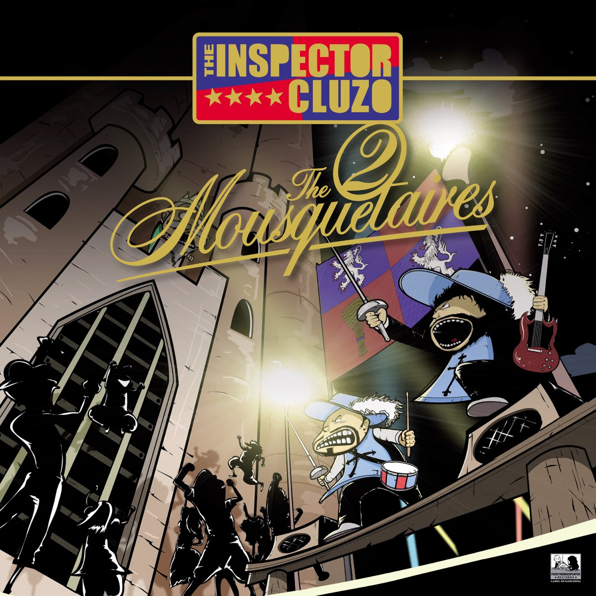

Les posts
Shaka Ponk tire sa révérence avec deux concerts inoubliables

Ce vendredi 29 et samedi 30 novembre 2024 marqueront à jamais
l’histoire de la musique. Shaka Ponk, groupe emblématique de la scène
rock électro française, a offert ses deux derniers concerts, mettant
ainsi fin à une carrière légendaire qui aura duré près de deux
décennies.
Lire l'article
La Perte de Vue d'Elton John : Un Nouveau Chapitre de Sa Vie

Sir Elton John, l'iconique chanteur, compositeur et pianiste
britannique, a récemment fait part d'une nouvelle qui a bouleversé ses
fans du monde entier : il souffre d'une perte progressive de la vue.
Cette annonce, faite lors de ses concerts et dans ses interviews,
marque un tournant dans la vie de l'artiste de 76 ans. Bien que cette
nouvelle ait suscité de l’inquiétude chez ses admirateurs, elle
témoigne également de sa résilience et de sa détermination à continuer
à vivre pleinement, tout en s'adaptant à de nouveaux défis.
Lire l'article
"Ma meilleure ennemie" : une chanson emblématique d’Arcane

Depuis sa sortie, la série Arcane a captivé le public par son univers
riche, son animation exceptionnelle et sa bande-son inoubliable. Parmi
les morceaux qui se démarquent, "Ma meilleure ennemie" occupe une
place particulière, capturant à la fois la tension et l’intensité
émotionnelle entre les deux protagonistes, Vi et Jinx.
Lire l'article
The Inspector Cluzo : Une Tournée et un Nouvel Album qui Résonnent
comme un Coup de Fouet Musical

Le duo français The Inspector Cluzo, composé de Laurent Lacrouts
(batterie, chant) et Mathieu Jaton (guitare, chant), revient sur le
devant de la scène avec un nouvel album explosif et une tournée qui
fait vibrer les foules. Ce groupe, connu pour son énergie dévastatrice
et son mélange unique de rock, blues et soul, ne cesse d'étonner et de
captiver son public, et cette nouvelle aventure n'est pas différente.
Lire l'article